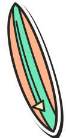
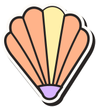
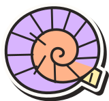
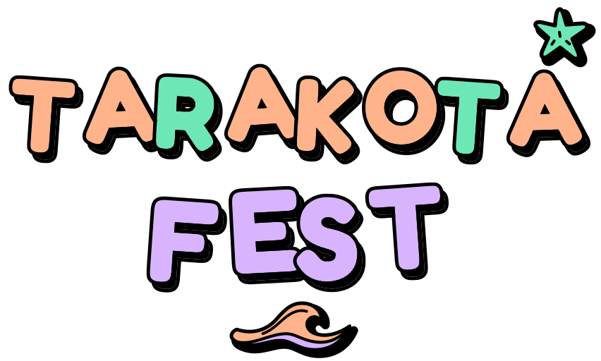
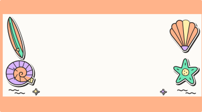
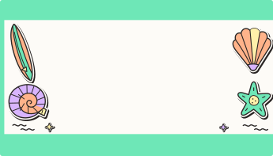
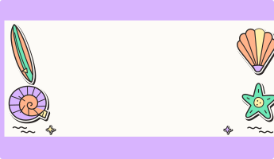

Tiga Panggung Tepi Pantai
Sunset Reef Mainstage untuk penampil utama, Karang Acoustic Deck untuk sesi senja santai, dan Pasir Tropik Arena untuk groove elektronik dan surf rock.




Perayaan musik pesisir, kolektif selancar, dan seni visual tepi laut selama tiga hari dengan latar matahari terbenam Nusantara.
Tiga panggung tepi pantai dari akustik karang senja hingga pesta disko tropis di bawah langit bintang.
Kami memadukan panggung musik independen, komunitas selancar lokal, serta lokakarya daur ulang kerang laut menjadi perayaan pesisir yang hangat dan ramah semua pengunjung.
Ramah Keluarga & Tanpa Plastik Sekali PakaiSunset Reef Mainstage untuk penampil utama, Karang Acoustic Deck untuk sesi senja santai, dan Pasir Tropik Arena untuk groove elektronik dan surf rock.
Area Pasar Kerajinan Pesisir menghadirkan kreator tenun, kopi tepi laut, serta kuliner bahari segar dari UMKM lokal sepanjang festival.
Slot terbuka bagi band independen dari berbagai kota pesisir Indonesia untuk tampil langsung di hadapan ribuan penonton.


